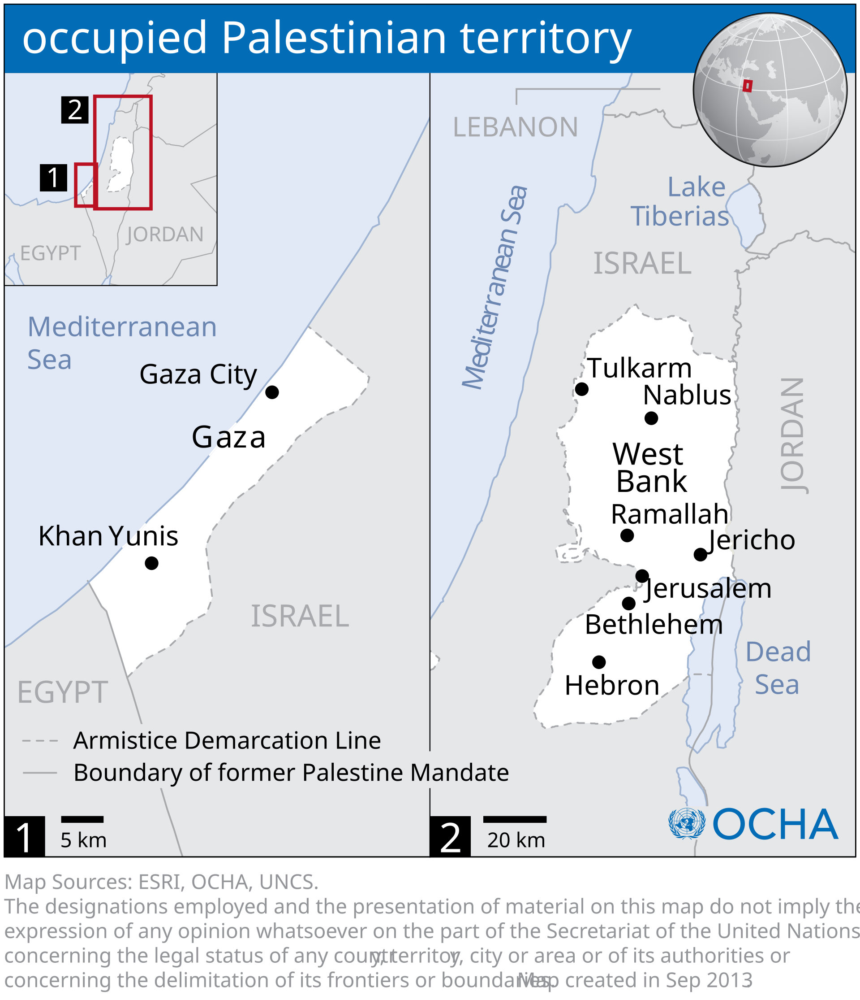

Objectif : interroger le pouvoir des mots — « terroriste », « conflit », « otage » — et la qualification juridique de la situation : de quoi parle-t-on quand on parle, et pourquoi ce choix n’est jamais neutre.
Le terme n’est défini par aucune convention internationale générale — chaque État et organisation compose sa liste, ses critères, ses exceptions (les armes d’État n’y figurent jamais). Désigner le Hamas « terroriste » évacue la dimension politique de ses actions et de sa base électorale palestinienne ; or un processus de paix suppose de parler à tous les acteurs — l’histoire l’a montré avec l’ANC sud-africaine, retirée des listes quand la négociation est devenue possible (doc. de travail). Symétriquement : selon les mêmes critères (cibler des civils pour effet politique — la définition proposée par Pascal Boniface), des groupes armés sionistes (Irgoun, Lehi) avant 1948, et certains actes des appareils israéliens ensuite, tombent dans la qualification — ce qui ne « terrorise » pas pour autant l’État d’Israël dans son ensemble, mais rappelle que l’étiquette exclusive est un choix de récit, pas un fait (doc. de travail).

Juridiquement, on parle bien de « conflit armé » — mais le mot courant laisse entendre deux forces comparables qui s’affrontent à égalité. La situation documentée est autre : un acteur exerce un pouvoir continu sur un autre (territoire, économie, registres de population, ciel et mer), dans un système d’occupation, d’annexion et de colonisation. La violence périodique — bombardements, attentats, opérations — n’est alors que l’expression visible d’une structure de domination, pas le cœur du problème (doc. de travail). D’où les qualifications concurrentes (« apartheid » selon HRW, B’Tselem, Amnesty — voir chap. 7) et le débat sur le mot même, qui est déjà un débat politique.
« En temps de guerre, les ponts sont les premières choses qui sont détruites afin de construire des murs à la place. Dans ce conflit, le plus gros enjeu, c’est précisément de maintenir ces liens entre les deux peuples. » Delphine Horvilleur (doc. de travail)
| # | Règle (Morelli) | Test sur le cas |
|---|---|---|
| 1 | Nous ne voulons pas la guerre | Chaque camp se dit en guerre défensive : riposte au 7-Oct vs riposte à l’occupation — les deux « défensives » se nourrissent. |
| 2 | L’ennemi est seul responsable | « Tout vient du Hamas » vs « tout vient d’Israël » — chaque lecture monocamp est une règle n°2 en action. |
| 3 | L’ennemi est méchant et cruel | « Barbares », « terrorisés », déshumanisation par images — des deux côtés, systématiquement. |
| 4 | Nous ne faisons pas de victimes civiles | Frappes « chirurgicales » vs « dommages collatéraux » ; les morts civils de « notre » camp sont des victimes, ceux d’en face des statistiques. |
| 5 | L’ennemi utilise des armes interdites | Boucliers humains, phosphore blanc… — vérifier chaque accusation : certaines sont documentées, d’autres sont des rumeurs. |
| 6 | Nous souffrons peu, l’ennemi souffre énormément | Chaque camp hiérarchise les souffrances — la balance des morts est un champ de bataille narratif (voir chap. 8). |
| 7 | Ce que l’ennemi dit est propagande | Le témoignage palestinien de Gaza est « du Hamas », le porte-parole israélien est « de la propagande » — pré-réflexe symétrique. |
| 8 | Nous avons un but juste | Sécurité / autodétermination : deux buts nobles instrumentalisés en fins absolues. |
| 9 | La culture soutient notre cause | Concours, hymnes, films, expositions — chaque camp mobilise ses créateurs. |
| 10 | Douter, c’est trahir | Accusations croisées d’antisémitisme / de soutien au terrorisme contre les dissidents internes — effet refroidissant documenté sur les campus (voir chap. 8). |
Mode d’emploi : la grille n’est pas une machine à innocenter — elle n’efface pas le 7 octobre ni les faits documentés sur Gaza. Elle sert à repérer les mécanismes de fabrique du consentement, des deux côtés, pour désarmer nos propres réflexes. Le canular des couveuses (Nayirah, oct. 1990 — témoignage fabriqué repris par AP puis Amnesty, rétracté en 1991) reste la leçon fondatrice : même les vigilants se font prendre (doc. de travail ; Notes).
Le droit international humanitaire — les quatre Conventions de Genève (ratifiées universellement) et leurs Protocoles — encadre la conduite des hostilités : protection des civils, des blessés, des prisonniers ; distinction, proportionnalité, précaution. La classification déclenche le régime applicable : CAI (interétatique) ou CANI (intraétatique). Un même acte — frapper une école, déplacer une population — n’a pas le même régime juridique selon la qualification de la situation (doc. de travail).
Ces catégories montrent les limites du cadre : les États invoquent la légitime défense pour frapper un groupe non étatique sur le territoire d’un autre État — lecture très controversée, la majorité des juristes réservant l’art. 51 de la Charte aux attaques entre États (doc. de travail). C’est exactement le terrain du débat après le 7 octobre : Israël invoque la légitime défense contre le Hamas à Gaza — la communauté internationale débat, notamment de la proportionnalité, qui borne même une défense légitime.
De la rés. 242 (1967) à la rés. 2334 (2016), le Conseil de sécurité n’a cessé de qualifier les territoires conquis d’« occupés » et les colonies d’« illégales » — liste complète au doc. de travail (242, 338, 446, 452, 465, 476, 478, 605, 608, 1322, 1402, 1435, 1544, 2334) (doc. de travail ; UNISPAL). La régularité du geste compte : ce n’est pas une résolution isolée, c’est une ligne continue que seule la menace du veto américain a maintenue sans suite politique.
Avis « Mur » (9 juil. 2004, affaire 143) : la construction du mur en Cisjordanie — dont le tracé absorbe des blocs de colonies — est contraire au droit international ; l’obligation de le déconstruire et de réparer. Avis « Effets juridiques des politiques et pratiques israéliennes dans les territoires palestiniens » (19 juil. 2024, affaire 186) : l’occupation est illégale, les colonies doivent cesser et être démantelées, les ressources du territoire ne peuvent être exploitées — et Gaza demeure occupée : malgré le retrait de 2005, Israël garde un contrôle effectif (blocus terrestre, aérien, maritime, registres) (avis CIJ ; doc. de travail). Les deux avis sont consultatifs : autorité juridique maximale, exécution nulle — la fracture entre le droit et sa force est le sujet du chapitre 7.
Espace de travail : cette page est le dossier vivant du chapitre — brouillons, activités, sources et repères s’y accumulent, séparément de l’index. Les attributions entre parenthèses dans le texte renvoient aux entrées ci-dessous.
Documents de travail (Drive) — « 5. Qualification et utilisation du mot conflit.docx » (document de base de ce chapitre) · « 250407_bibliographie_Pal-Isr.docx » (bibliographie générale de l’équipe) · « 250701_dates clés_ISRAPAL.xlsx » · « 250701_Lexique_ISRAPAL.docx » · dossier racine « 2026_Outil péda_Israël-Palestine ».
Droit international humanitaire — Conventions de Genève et Protocole additionnel I (1977) — base de données du CICR (distinction conflits armés internationaux / non internationaux) · UCDP, typologie des conflits armés (61 conflits étatiques recensés en 2024) · Pascal Boniface, Géopolitique du terrorisme (Armand Colin) — définition opérationnelle.
Jurisprudence — affaire 143 — avis « Mur » (2004) · affaire 186 — avis du 19 juillet 2024 (illégalité de l’occupation ; Gaza reste occupée) · résolutions du Conseil de sécurité 242 (1967), 338 (1973), 446, 452, 465, 476, 478, 605, 608, 1322, 1402, 1435, 1544, 2334 (2016) — textes via UNISPAL/docs.un.org.
Propagande — Anne Morelli, Les Principes élémentaires de propagande de guerre (Éd. complexes, 2001) · précédent documenté : le canular des couveuses du Koweït (AP, octobre 1990), rétracté par Amnesty en 1991 · Delphine Horvilleur, interviews 2023-2024 sur le « maintien des liens ».
Qualifications concurrentes — HRW, A Threshold Crossing (2021) ; B’Tselem (2021) ; Amnesty, Israel’s apartheid against Palestinians (2022) — les trois rapports « apartheid », à lire avec leurs réponses officielles israéliennes · Rapporteuse spéciale de l’ONU Francesca Albanese (rapports 2024-2025) — pour la qualification « apartheid » saisie à l’ONU.